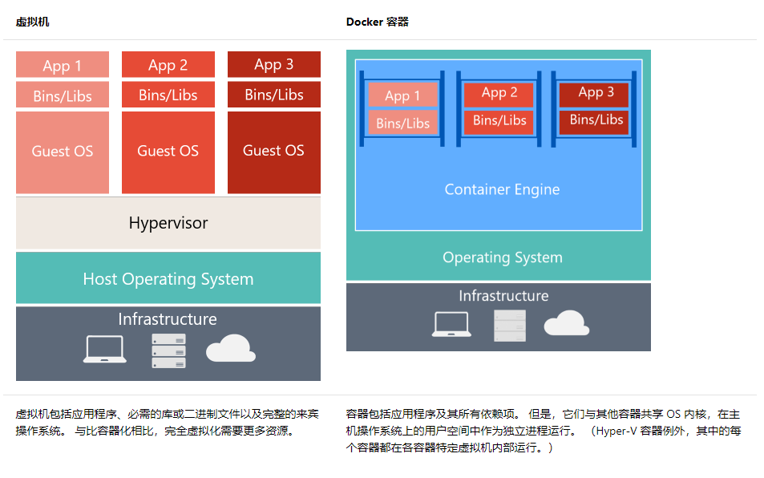

Docker 是一个开源的应用容器引擎，可以轻松的为任何应用创建一个轻量级的、可移植的、自给自足的容器。
什么是Docker
Docker 是一个开源的应用容器引擎，可以轻松的为任何应用创建一个轻量级的、可移植的、自给自足的容器。开发者在本地编译测试通过的容器可以批量地在生产环境中部署，包括VMs（虚拟机）、bare metal、OpenStack 集群和其他的基础应用平台。
简单的理解，Docker类似于集装箱，各式各样的货物，经过集装箱的标准化进行托管，而集装箱和集装箱之间没有影响。也就是说，Docker平台就是一个软件集装箱化平台，这就意味着我们自己可以构建应用程序，将其依赖关系一起打包到一个容器中，然后这容器就很容易运送到其他的机器上进行运行，而且非常易于装载、复制、移除，非常适合软件弹性架构。
因此，就像船只、火车或卡车运输集装箱而不论其内部的货物一样，软件容器充当软件部署的标准单元，其中可以包含不同的代码和依赖项。 按照这种方式容器化软件，开发人员和 IT 专业人员只需进行极少修改或不修改，即可将其部署到不同的环境。
总而言之，Docker 是一个开放平台，使开发人员和管理员可以在称为容器的松散隔离的环境中构建镜像、交付和运行分布式应用程序。以便在开发、QA 和生产环境之间进行高效的应用程序生命周期管理。

如上图所示，由于容器所需的资源要少得多（例如，它们不需要一个完整的 OS），所以它们易于部署且可快速启动。这使你能够具有更高的密度，也就是说，这允许你在同一硬件单元上运行更多服务，从而降低了成本。
在同一内核上运行的副作用是，你获得的隔离比 VM 要少。
镜像的主要目标是使环境（依赖项）在不同的部署中保持不变。 也就是说，可以在计算机上调试它，然后将其部署到保证具有相同环境的另一台计算机上。
借助容器镜像，可打包应用或服务并采用可靠且可重现的方式对其进行部署。可以说 Docker 不只是一种技术，还是一种原理和过程。
在使用Docker之前，我们经常会听到，“这个问题在开发环境是正常的！”。而在使用 Docker 后，你不会听到开发人员说：“为什么它能在我的计算机上使用却不能用在生产中？”。开发人员只需说“它在 Docker 上运行”，因为打包的 Docker 应用程序可在任何支持的 Docker 环境上执行，而且它在所有部署目标（例如，开发、QA、暂存和生产）上都按预期运行。
基本概念
镜像：一个特殊的文件系统
操作系统分为内核和用户空间。对于 Linux 而言，内核启动后，会挂载 root 文件系统为其提供用户空间支持。而 Docker 镜像（Image），就相当于是一个 root 文件系统。
Docker 镜像是一个特殊的文件系统，除了提供容器运行时所需的程序、库、资源、配置等文件外，还包含了一些为运行时准备的一些配置参数（如匿名卷、环境变量、用户等）。
镜像不包含任何动态数据，其内容在构建之后也不会被改变。
Docker 设计时，就充分利用 Union FS 的技术，将其设计为分层存储的架构。 镜像实际是由多层文件系统联合组成。
镜像构建时，会一层层构建，前一层是后一层的基础。每一层构建完就不会再发生改变，后一层上的任何改变只发生在自己这一层。
比如，删除前一层文件的操作，实际不是真的删除前一层的文件，而是仅在当前层标记为该文件已删除。
在最终容器运行的时候，虽然不会看到这个文件，但是实际上该文件会一直跟随镜像。
因此，在构建镜像的时候，需要额外小心，每一层尽量只包含该层需要添加的东西，任何额外的东西应该在该层构建结束前清理掉。
分层存储的特征还使得镜像的复用、定制变的更为容易。甚至可以用之前构建好的镜像作为基础层，然后进一步添加新的层，以定制自己所需的内容，构建新的镜像。
容器：镜像运行时的实体
镜像（Image）和容器（Container）的关系，就像是面向对象程序设计中的类和实例一样，镜像是静态的定义，容器是镜像运行时的实体。容器可以被创建、启动、停止、删除、暂停等 。
容器的实质是进程，但与直接在宿主执行的进程不同，容器进程运行于属于自己的独立的命名空间。前面讲过镜像使用的是分层存储，容器也是如此。
容器存储层的生存周期和容器一样，容器消亡时，容器存储层也随之消亡。因此，任何保存于容器存储层的信息都会随容器删除而丢失。
按照 Docker 最佳实践的要求，容器不应该向其存储层内写入任何数据 ，容器存储层要保持无状态化。
所有的文件写入操作，都应该使用数据卷（Volume）、或者绑定宿主目录，在这些位置的读写会跳过容器存储层，直接对宿主（或网络存储）发生读写，其性能和稳定性更高。
数据卷的生存周期独立于容器，容器消亡，数据卷不会消亡。因此， 使用数据卷后，容器可以随意删除、重新 run，数据却不会丢失。
注意：
容器在整个应用程序生命周期工作流中提供以下优点：隔离性、可移植性、灵活性、可伸缩性和可控性。 最重要的优点是可在开发和运营之间提供隔离。
仓库：集中存放镜像文件的地方
镜像构建完成后，可以很容易的在当前宿主上运行，但是， 如果需要在其他服务器上使用这个镜像，我们就需要一个集中的存储、分发镜像的服务，Docker Registry 就是这样的服务。
一个 Docker Registry 中可以包含多个仓库（Repository）；每个仓库可以包含多个标签（Tag）；每个标签对应一个镜像。
所以说，镜像仓库是 Docker 用来集中存放镜像文件的地方，类似于我们之前常用的代码仓库。
通常，一个仓库会包含同一个软件不同版本的镜像，而标签就常用于对应该软件的各个版本 。
我们可以通过<仓库名>:<标签>的格式来指定具体是这个软件哪个版本的镜像。如果不给出标签，将以 latest 作为默认标签。
这里补充一下 Docker Registry 公开服务和私有 Docker Registry 的概念：
Docker Registry 公开服务是开放给用户使用、允许用户管理镜像的 Registry 服务。
一般这类公开服务允许用户免费上传、下载公开的镜像，并可能提供收费服务供用户管理私有镜像。
最常使用的 Registry 公开服务是官方的 Docker Hub ，这也是默认的 Registry，并拥有大量的高质量的官方镜像，网址为：hub.docker.com/ 。
在国内访问 Docker Hub 可能会比较慢，国内也有一些云服务商提供类似于 Docker Hub 的公开服务。
除了使用公开服务外，用户还可以在本地搭建私有 Docker Registry 。Docker 官方提供了 Docker Registry 镜像，可以直接使用做为私有 Registry 服务。
开源的 Docker Registry 镜像只提供了 Docker Registry API 的服务端实现，足以支持 Docker 命令，不影响使用。但不包含图形界面，以及镜像维护、用户管理、访问控制等高级功能。
Docker的主要应用场景
简化配置
虚拟机的最大好处是能在你的硬件设施上运行各种配置不一样的平台（软件、系统），Docker在降低额外开销的情况下提供了同样的功能。它能让你将运行环境和配置放在代码中然后部署，同一个Docker的配置可以在不同的环境中使用，这样就降低了硬件要求和应用环境之间耦合度。
简单的来说，容器镜像打包完成后，它就是个独立的个体了，丢到哪里都能跑，而无需针对各个平台去独立配置。
代码流水线（Code Pipeline）管理
前一个场景对于管理代码的流水线起到了很大的帮助。代码从开发者的机器到最终在生产环境上的部署，需要经过很多的中间环境。而每一个中间环境都有自己微小的差别，Docker给应用提供了一个从开发到上线均一致的环境，让代码的流水线变得简单不少。
提高开发效率
不同的开发环境中，我们都想把两件事做好。一是我们想让开发环境尽量贴近生产环境，二是我们想快速搭建开发环境。
使用Docker非常简单的就能够实现这两点，而且哪怕是开发环境的机器配置一般的情况下搭建多个生成服务应用。一台一般配置服务器或开发机也能轻松的跑起多个Docker应用，而无需额外增加机器配置。因为Docker有个非常NB的特性，拥有虚拟化的特性，而几乎没有额外的开销。
隔离应用
很多情况下，我们需要在一台服务器上运行多个不同的应用，比如上面提到的提高开发效率的场景等。
我们经常需要考虑三点，一是因为要降低成本而进行服务器整合，二是将一个整体式的应用拆分成松耦合的单个服务（比如微服务架构），三是还需要考虑应用之间的兼容性。而对于Docker来说，支持起来就非常简单了。同一台机器，我可以同时运行N个Docker web应用，托管到不同的Web服务器（Kestrel、Ngnix、Tomcat），而无需担心他们会搞起3Q大战，也无需担心我的开发机器会跑不起来。
整合服务器
正如通过虚拟机来整合多个应用，Docker隔离应用的能力使得Docker可以整合多个服务器以降低成本。由于没有多个操作系统的内存占用，以及能在多个实例之间共享没有使用的内存，Docker可以比虚拟机提供更好的服务器整合解决方案。
这就意味着资源得到更有效的利用——可以做更多衣服，而且还没有边角料，成本还更低。
调试能力
Docker提供了很多的工具，这些工具不一定只是针对容器，但是却适用于容器。它们提供了很多的功能，包括可以为容器设置检查点、设置版本和查看两个容器之间的差别，这些特性可以帮助调试Bug。
多租户环境
在多租户的应用中，它可以避免关键应用的重写。比如IoT（物联网）的应用中，开发一个快速、易用的多租户环境。这种多租户的基本代码非常复杂，很难处理，重新规划这样一个应用不但消耗时间，也浪费金钱。
使用Docker，可以为每一个租户的应用层的多个实例创建隔离的环境，这不仅简单而且成本低廉，当然这一切得益于Docker环境的启动速度和其高效的diff命令。
就如同我们现在写了一个不支持多租户的业务程序，而实际的业务中经常会出现需要支持多租户或者有新客户需要使用的场景，这是我们通常的简单做法是——部署一套新的代码。当站点达到一定量的适合，要么重写程序，要么维护人员Game over。
快速部署
在虚拟机之前，引入新的硬件资源需要消耗几天的时间。虚拟化技术（Virtualization）将这个时间缩短到了分钟级别。而Docker通过为进程仅仅创建一个容器而无需启动一个操作系统，再次将这个过程缩短到了秒级。
你可以在服务器中或云端创建销毁资源而无需担心重新启动带来的开销。通常情况下，服务器的资源利用率只有30%，而通过使用Docker并进行有效的资源分配可以提高资源的利用率。
Docker改变了什么？
综上所述，Docker到底改变了什么？笔者是这么理解的：
- Docker改变了云服务，使云服务的共融共通的理想逐步成为了可能。并且Docker 已经是云策略的一部分，许多开发者正在计划使用 Docker 将业务迁移到云端。另外，为了避免被云服务供应商绑定，Docker成为很多开发者的首选。
- Docker改变了产品交付，为产品的整个生命周期提供了一整套的解决方案和流程。
- Docker改变了开发方式，提供了简化的环境配置、封装的运行环境以及统一的环境。并且提供了快速部署的方式。
- Docker改变了测试，多版本测试变得极为方便，快速构建测试环境也变得更加简单并且无需开发人员干预或者搭建。
- Docker改变了运维，环境的一致性让运维变得更加简单，同时热更新的支持让运维不再需要半夜加班部署更新，更新可以随时进行。当出现重大问题时，还能快速回滚到指定版本。
- Docker改变了架构，自动化扩容支持让架构变得更加简单，分布式系统也更加易于搭建和支持。同时遗留的单体应用也很易于转变为现代应用。
总之，在某种程度上，Docker改变了产品开发中的一些游戏规则。虽然Docker是一项技术，但是它也带来了新的思维，新的流程和工作方法，Docker在推动行业的发展，Docker已经在改变世界，并且在逐步的变为事实……
安装docker
我的操作系统是manjaro(linux），系统自带docker，只用开启服务即可：
# Pacman 安装 Docker
sudo pacman -S docker
# 查看安装是否成功
sudo docker --version
# 启动docker服务
sudo systemctl start docker
# 查看docker服务的状态
sudo systemctl status docker
# 查看docker系统信息
sudo docker system info
# 设置docker开机启动服务
sudo systemctl enable docker
# 关闭docker服务
sudo systemctl stop docker
# 如果还没有 docker group 就添加一个
sudo groupadd docker
# 将自己的登录名(${USER} )加入该 group 内。然后退出并重新登录就生效啦
sudo gpasswd -a ${USER} docker
# 重启 docker 服务
sudo systemctl restart docker
# 切换当前会话到新 group 或者重启 X 会话
# 注意，这一步是必须的，否则因为 groups 命令获取到的是缓存的组信息，刚添加的组信息未能生效，所以 docker images 执行时同样有错。
newgrp - docker
OR
pkill X